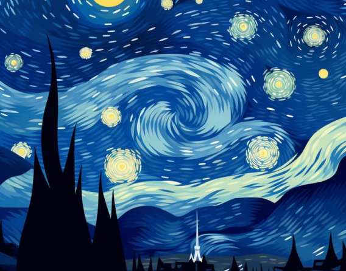
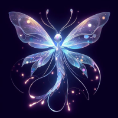
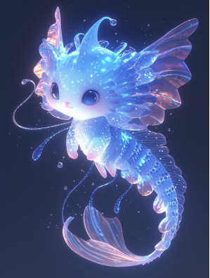

Stary night
Look up at the night sky, and find yourself immersed in the amazing mountain range
of Aspen.
The starry sky combined with the breathtaking scenery creates a moment of pure magic,
leaving you in awe of nature's beauty.
- Immerse yourself in the serene beauty of Aspen's majestic mountain range under a starry night
sky
- Experience the tranquility and wonder as the stunning scenery captivates your senses.
- Let the natural beauty of Aspen inspire awe and provide a peaceful escape from everyday life.
Read more
Did you know some animals and plants can glow in the dark?
This cool trick is called bioluminescence.
It happens when a special chemical reaction inside their bodies creates light.
It’s like nature’s version of neon lights!
- A molecule called luciferin mixes with oxygen.
- An enzyme called luciferase helps speed up the process.
- Voilà! A glow appears, but without heat – it’s called “cold light.

Where Do We See It?
Fireflies: They flash to talk to each other and attract mates.
Deep-sea fish: They use it to scare predators or lure prey.
Fungi and plants: Some even glow to attract bugs or spread spores!
